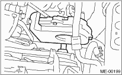
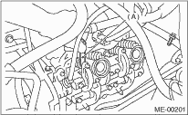

NOTE:
Inspection and adjustment of valve clearance should be performed while engine is cold.
1. Set the vehicle on a lift.
2. Lift up the vehicle.
3. Remove the under cover.
4. Lower the vehicle.
5. Disconnect the ground cable from the battery.

6. Remove the timing belt cover (LH).

7. When inspecting #1 and #3 cylinders:
(1) Disconnect the spark plug cords from spark plugs RH side. 
(2) Disconnect the PCV hose from rocker cover (RH).
(3) Remove the bolts, then remove the rocker cover (RH).
8. When inspecting #2 and #4 cylinders:
(1) Disconnect the spark plug cords from spark plugs (LH side).
(2) Disconnect the PCV hose from rocker cover (LH).
(3) Remove the bolts, then remove the rocker cover (LH).
9. Set #1 cylinder piston to top dead center of compression stroke by rotating the crank pulley clockwise using the socket wrench.
NOTE:
When the arrow mark (A) on cam sprocket (LH) comes exactly to the top, #1 cylinder piston is brought to the top dead center of compression stroke.

10. Measure #1 cylinder valve clearance by using thickness gauge.
NOTE:
• Insert the thickness gauge (A) in as horizontally as possible with respect to the valve stem end face.
• Lift up the vehicle, and then measure the exhaust valve clearances.
Valve clearance (standard):
Intake
0.20±0.04 mm (0.0079±0.0016 in)
Exhaust
0.25±0.04 mm (0.0098±0.0016 in)

11. If necessary, adjust the valve clearance.
12. Measure the valve clearance in #3, #2 and #4 cylinder in the same measurement procedure as #1 cylinder.
NOTE:
• Be sure to set the cylinder pistons to their respective top dead centers on compression stroke before measuring valve clearances.
• By rotating the crank pulley clockwise every 180° from the state that #1 cylinder piston is on the top dead center of compression stroke, #3, #2 and #4 cylinder pistons come to the top dead center of compression stroke in this order.
13. After inspection, install the related parts in the reverse order of removal.